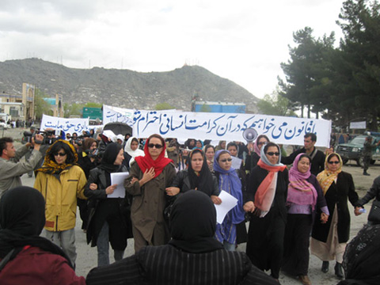

|
|
راهپیمایی منسجم زنان افغانستان: برابری حق ماست/نادیه فضل
چهار شنبه26 فروردین 1388
تغییر برای برابری - امروز چهارشنبه پانزدهم ماه آپریل 2009 میلادی برابر به بیست و ششم فروردین سال 1388 خورشیدی، جمعیت کثیری از زنان افغانستان با گردهم ایی وراهپمایی منسجمی زیر شعار "برابری حق ماست!" رسمأ مخالفت ایشان را با قانون ضد انسانی آیت الله محسنی ابراز داشتند.

زنان افغانستان که در ادامه ی سی سال جنگ فراز ونشیب های زیادی را تجربه کرده اند وبه ویژه در یک دهه اخیر قانون گذاران مسلمان با وضع قوانین گوناگون با استناد به احکام شرعی، عرصه زندگی را روز تا روز بر آنان محدود نموده اند،اینبار در برابر چالش بزرگتری قرار گرفته اند.
سرانجام طرح و تصویب قانون احوال شخصیه ی اهل تشیع که به روز دوم ماه اپریل توسط رییس جمهور کرزی توشیح گردید باعث جنجال های زیادی در عرصه بین المللی و همچنان در میان جمعیت های مختلف افغانستان گردید.
با آنکه رییس جمهور کرزی اعلام نمود که بر موادی از این قانون تجدید نظر خواهد نمود واما آیت الله محسنی باردیگر به روز شنبه یازدهم ماه اپریل ضمن اجلاس مطبوعاتی اعلام داشت که هیچکسی حق تغیر آوری در این قانون را ندارد.
با توجه به اظهارات وی ودقت بر پیامد های چنین قوانین ضد بشری ،امروز چهارشنبه شماری زیادی از زنان و مردان با احتجاج شدید در برابر مدرسه خاتم النبیین درکابل به تظاهرات پرداختند.
همچنان شماری زیادی از پیروان افکار آیت الله محسنی بصورت دسته جمعی تلاش نمودند تا این تظاهرات را از پاشیده وبا استفاده از الفاظ رکیک وحمله بردن بر این زنان کوشیدند تا جلو آنها را بگیرند.
بانو دیانا ثاقب یکتن از فعالین برگزاری این راهپیمایی در صحبتی روال برگزاری این تظاهرات را بسیار خوب توصیف نمود وافزود: متأسفانه طرفداران آیت الله محسنی با حمله برما برخورد بسیار شرم آوری داشتند.
خانم ثاقب اضافه کرد:" آنها که از شب پیش آمادگی داشتند،برعلیه زنان شعار میداند وبا پرتاب سنگ بر خانمهای ناراضی رفتار بسیار خشنی داشتند. در برابر، خانم ها متین و آرام بدون هیچگونه برخورد لفظی بر تظاهرات ایشان ادامه داده ، با آنکه مردان هم فکر محسنی آنها را در محدوده ی چهار پنج حلقه محاصره نموده بودند ولی به کمک پولیس مؤفق شدند تا جلو ساختمان مجلس نماینده گان افغانستان برسند.
ولی آقای قانونی رییس مجلس افغانستان از محوطه پارلمان بیرون نشده برخلاف چند تن از وکلای ایکه همچنان مخالف این قانون بودند به بیرون از عمارت مجلس با آنها داخل گفتگو شدند.
به قول خانم دیانا ثاقب رییس مجلس نماینده گان افغانستان سرانجام ده تن از زنان ایرا که از جمع زنان ناراضی واعتراض کننده گان بر مواد تبعیض آمیز این قانون برگزیده شده بودند به نزد خویش پذیرفت ولی موضع گیری وی خلاف آنچه بود که این زنان انتظار داشتند.
آقای محمد یونس قانونی در پاسخ به این زنان گفته است که :" آقای محسنی به اجبار ویرا وادار به قبول این قانون نموده است.
آقای قانونی رییس پارلمان به این زنان گفته است:"ازدوسال به اینطرف بحث بر این قانون جریان داشته است وما میفهمیدیم که این قانون مسأله دارد ولی آقای محسنی فشار زیادی بر پارلمان ، مبنی بر اینکه: شما دربرابر به رسمیت شناختن مذهب شیعه مخالفت مینمایید واینکه اهل تشیع در افغانستان بتوانند قانونی داشته باشند،وارد نمود.
این در حالیست که بنابر گزارش منتشر شده در وبسایت خاوران بتاریخ دوم ماه اپریل آقای قانونی ، قانون احوال شخصیه اهل تشیع را در مقایسه با هفت سال پیش "دوره طالبان" که شنیدن صدای پای زن گناه پنداشته میشد را یک پیشرفت تلقی نمود.
"درمورد قانون احوال شخصیه اهل تشیع که درآن محدودیت های خاصی برای زنان اعمال شده است، آقای قانونی اظهارداشت که این قانون توسط شورای ملی تصویب گردیده است اما نه با آن تعبیر وتفسیری که ازان درمطبوعات غرب نشر شده است. به گفته آقای قانونی، این قانون در بیشتر از ششصد ماده تدوین گردیده بود که بعد از بحث وبررسی مفصل به دوصد وهفتاد ماده تنزیل یافته و به تصویب رسید. ایشان علاوه کرد" هرچند که این قانون بادید عینک اروپایی ناقض به نظر میرسد، ولی علیر غم کمبودیهایی که دارد درجامعه افغانی ما تا اندازه ی قابل تنفیذ میباشد. به قول آقای قانونی، این قانون درمقایسه با قانون هفت سال پیش که درآن شنیدن صدای پای زنان گناه بود و زن ازهیچ حقی برخوردار نبود، تصویب این قانون یک پیشرفت محسوب میگردد. درمورد سرنوشت آقای دوستم و آقای پدرام سوالی پرسیده شد و ایشان گفت که به دلیل یک سلسله مشکلات آقای دوستم وآقای پدرام تا اندازه ی درحالت انزوا قرارگرفته بودند که این مشکل با کوشش دوستان حل گردیده است. اکنون آقای دوستم درترکیه تشریف دارد و آقای پدرام درهالند وبرای فعالیت حزبی وسیاسی و برای برگشتن آنها به افغانستان هیچ مشکلی وجود ندارد.
توجه نمایید به این نشانی.
واما به قول خانم دیانا ثاقب در این راهپیمایی که زنان از قشر ها،باور ها وعقاید مختلف با هم همصدا حرکت دسته جمعی ایرا راه اندازی نموده بودند به قول خانم ثاقب وزارت امور زنان واکنش خنثی ایرا اختیار نمود واین زنان از هیچ نوع کمک و همیاری مسوولین این وزارت برخوردار نشدند.
علاوه براین به گفته ی خانم ثاقب شبکه تلویزنی منحصر به آیت الله محسنی "تمدن" نیز از چند شب با تبلغات گسترده ی مردم را بر امتناع از شرکت در این تظاهرات واداشته وبا کلمات وبرچسپ های ناشایست به زنان ناراضی برنامه های وسیعی را پخش نمودند .
همچنان بنابر آخرین گزارش ها افراد وابسته به ایت الله محسنی بر مکاتب دختران در غرب کابل به ویژه بر دبستان "لیسه " معرفت ،با پرتاب سنگ حمله برده در ضمن اهالی ناحیه شیعه نشین کابل "افشار " را نیز ازبا تهدید از رفته وشرکت در این تظاهرات مانع شدند.
این نخستین واکنش دسته جمعی زنان واولین نشانه های روشن یک نهضت فراگیر زنان در افغانستان.
قانون احوال شخصیه اهل تشیع در افغانستان در کنار کنش های دیگرضد بشری در افغانستان تلاشیست در سلب حقوق نیم بیشتر از شهروندان افغانستان وعقیم ساختن نیروی زنان این کشور.
این قانون با وضع موادی برحریم زندگی شخصی مردم تاخته وبدین ترتیب نقض حقوق بشر را قانونی ساخته است.